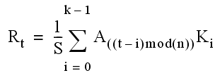

The LAPLACIAN function applies a Laplacian operator to a 2D image array to generate an array containing difference values that represent edges in the original image.
Result = LAPLACIAN( Array [, / ADD_BACK ] [, BIAS = value ] [, / CENTER ] [, / EDGE_TRUNCATE ] [, / EDGE_WRAP ] [, / EDGE_ZERO ] [, INVALID = value ] [, KERNEL_SIZE ={3 | 5}] [, MISSING = value ] [, / NAN ] [, / NORMALIZE ])
This function returns a signed difference array of the same shape as the input array. The input type is converted to an output type as follows:
|
Input |
Output |
|
BYTE |
INT |
|
INT |
LONG |
|
UINT |
LONG |
|
ULONG |
LONG64 |
|
ULONG64 |
LONG64 |
|
Non-numeric types: not allowed |
|
|
All other types |
Same as input type |
A 2D array of any numeric type containing the image.
Set this keyword to cause LAPLACIAN to add the original input array back into the computed difference array. This approach can be used to sharpen an image. The function returns the array with the same dimensions and type as the input array and clips the intermediate signed result to the data range of the input type.
Set this keyword equal to the bias offset to be added to each result value. If you have negative kernel values and a byte or unsigned integer input array, you can use this keyword to ensure that the result values are within the range of your data type.
Note: The same BIAS is added to each result value, regardless of any missing data as specified by the INVALID or NAN keywords. It is usually not appropriate to add the full BIAS if portions of the kernel were not applied due to missing data. In this case, you might want to use the NORMALIZE keyword instead.
Set or omit this keyword to center the kernel over each array point. If CENTER is explicitly set to zero, the LAPLACIAN function works in the conventional mathematical sense.
Note: For the kernel to be centered, it must be symmetric about the point K[FLOOR( m /2)], where m is the number of elements in the kernel. In many signal and image processing applications, it is useful to center a symmetric kernel over the data, thereby aligning the result with the original array.
Set this keyword to make LAPLACIAN compute the values of elements at the edge of Array by repeating the subscripts of Array (where A is an n -element vector, K is an k -element vector ( k ≤ n ), and S is the scale factor) at the edge. For example, if CENTER is set to zero:
where n is the number of elements in Array .
If none of the EDGE_* keywords are set, LAPLACIAN sets the values of Result to zero (or the value of BIAS ) where the kernel extends beyond the edge.
Set this keyword to make LAPLACIAN compute the values of elements at the edge of Array by “wrapping” the subscripts of Array (where A is an n -element vector, K is an k -element vector ( k ≤ n ), and S is the scale factor) at the edge. For example, if CENTER is set to zero:

where n is the number of elements in Array .
If none of the EDGE_* keywords are set, LAPLACIAN sets the values of Result to zero (or the value of BIAS ) where the kernel extends beyond the edge.
Set this keyword to make LAPLACIAN compute the values of elements at the edge of Array (where A is an n -element vector, K is an k -element vector ( k ≤ n ), and S is the scale factor) as if the array were padded with zeroes. For example, if CENTER is set to zero:

If none of the EDGE_* keywords are set, LAPLACIAN sets the values of Result to zero (or the value of BIAS ) where the kernel extends beyond the edge.
Set this keyword equal to a scalar value of the same type as Array that should be used to indicate missing or invalid data within Array . Missing data are ignored when computing the convolution for neighboring elements. In Result , missing elements are replaced by the convolution of all other valid points within the kernel. If all points within the kernel are missing, the result at that point is given by the value of the MISSING keyword.
Tip: The INVALID keyword has the same effect as the NAN keyword, but is useful for byte or integer data which have missing values.
Note: The INVALID keyword uses a simple comparison to ignore values and should not be set to NaN . For floating-point data, you can use the INVALID and NAN keywords simultaneously to filter out both user-defined values and NaN or Infinity values.
Set this keyword to either 3 or 5 to specify the kernel size. Larger kernels intensify and thicken edges. The default value is 3.
Set this keyword equal to the numeric value to return for elements that contain no valid points within the kernel. The default is zero for byte or integer input, and NAN for floating-point input. This keyword is only used if the INVALID or NAN keyword is set.
Set this keyword to cause the routine to check for occurrences of the IEEE floating-point values NaN or Infinity in the input data. Elements with the value NaN or Infinity are treated as missing data. Missing data are ignored when computing the convolution for neighboring elements. In Result , missing elements are replaced by the convolution of all other valid points within the kernel. If all points within the kernel are missing, then the result at that point is given by the MISSING keyword.
Note: LAPLACIAN should never be called without the NAN keyword if the input array may possibly contain NaN or Infinity values.
Set this keyword to automatically compute a bias and apply it to the result values. If this keyword is set, the BIAS keyword is ignored.
For BYTE or UINT, the bias is defined as the sum of the absolute values of the negative Kernel values, multiplied by either (255/Scale) for BYTE or (65535/ Scale ) for UINT, where Scale is the computed scale factor. For all other types, the bias is zero.
Tip: If NORMALIZE is set and your input array has missing data (the INVALID or NAN keywords are set), for each result value the scale factor and bias are computed using only those kernel values that contributed to that result value. This ensures that all result values are comparable in magnitude, regardless of any missing data.
This routine is written to make use of IDL’s thread pool , which can increase execution speed on systems with multiple CPUs. The values stored in the !CPU system variable control whether IDL uses the thread pool for a given computation. In addition, you can use the thread pool keywords TPOOL_MAX_ELTS, TPOOL_MIN_ELTS, and TPOOL_NOTHREAD to override the defaults established by !CPU for a single invocation of this routine. See Thread Pool Keywords for details.
The LAPLACIAN function can be used to sharpen an image.
file = FILEPATH('ctbone157.jpg', SUBDIR=['examples','data'])
READ_JPEG, file, image
; Display the original image.
IIMAGE, image, VIEW_GRID=[2,1], DIMENSIONS = [800, 500]
result = LAPLACIAN(image, /ADD_BACK)
IIMAGE, result, /VIEW_NEXT
Another example:
file = FILEPATH('nyny.dat', SUBDIR=['examples','data'])
imageSize = [768, 512]
image = READ_BINARY(file, DATA_DIMS=imageSize)
IIMAGE, image, VIEW_GRID=[2,2], DIMENSIONS = imageSize
ITEXT, 'Original', /VISUALIZATION, TARGET='view 1'
result = LAPLACIAN(image)
IIMAGE, result, /VIEW_NEXT
ITEXT, 'Laplacian difference array', /VISUALIZATION, $
TARGET='view 2'
result = LAPLACIAN(image, /ADD_BACK)
IIMAGE, result, /VIEW_NEXT
ITEXT, 'Laplacian filtered image', /VISUALIZATION, $
TARGET='view 3'
result = LAPLACIAN(image, KERNEL_SIZE=5, /ADD_BACK)
IIMAGE, result, /VIEW_NEXT
ITEXT, 'Filtered with maximum kernel size', /VISUALIZATION, $
TARGET='view 4'
; Make text annoations more legible
ISETPROPERTY, 'text*', FONT_SIZE=40, FILL_COLOR=[255,255,255], $
/FILL_BACKGROUND, ALIGNMENT=0.5
|
6.4 |
Introduced |
CONVOL , EDGE_DOG , EMBOSS , PREWITT , ROBERTS , SHIFT_DIFF , SOBEL